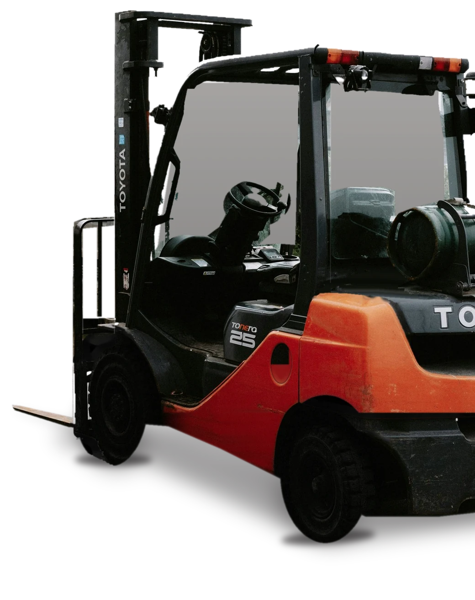
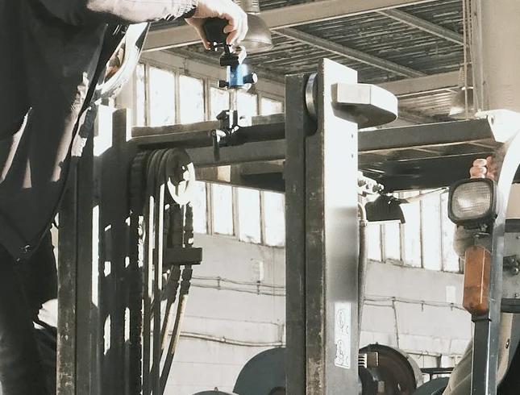
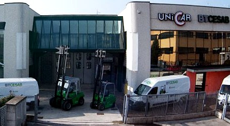

Consulenti, più che riparatori

Assistenza, riparazione e manutenzione di carrelli elevatori di ogni marca, in particolare Toyota, BT e Cesab. I tecnici arrivano con il furgone nelle aziende di Padova e provincia.
Riparazione, ricambi, controlli
I tecnici dedicati agli interventi esterni lavorano su tutte le marche e i modelli, in particolare Toyota e Cesab. In officina riparano carrelli, batterie e caricabatterie.
Riparazione
- Carrelli di marche primarie
- Trasformazioni e riparazioni di impianti elettronici
- Riparazione e manutenzione batterie
- Assistenza autorizzata per caricabatterie
Ricambi
- Ricambi originali
- Vendita e montaggio di anelli gommati
Controlli
- Manutenzione programmata
- Controlli di sicurezza
- Normative di sicurezza
- Formazione per carrellisti
Qualsiasi tipo e marca di ricambio, anche prodotto all'estero o uscito di produzione
Originali Toyota e di tutte le altre marche, kit di aggiornamento e materiali di consumo: batterie, gomme, olio. Il magazzino smaltisce i materiali esausti e i ricambi sostituiti.

Prima l'esame, poi la riparazione
- 1Esame tecnico approfondito di ogni carrello preso in carico
- 2Piano d'intervento
- 3Metodo di operazione concordato con voi
Durante una riparazione o una revisione vi lasciamo un carrello sostitutivo, perché il ciclo produttivo non si fermi. Per i parchi carrelli: contratti di manutenzione programmata.
Officina e magazzino ricambi sono in via Canada 12 a Padova, nella sede che Unicar condivide con la consociata Cami2, oggi di oltre 4000 mq. Le due aziende insieme contano 25 tecnici esterni con furgone attrezzato e seguono circa 3500-4000 carrelli dei clienti, tra Padova e Venezia.
Catene ogni tre mesi, tagliando ogni anno
Il D.Lgs. 81/2008, all'articolo 71, chiede di tenere i carrelli in efficienza e di annotare le verifiche su un registro, da conservare per tre anni. Funi e catene si controllano ogni tre mesi; la buona prassi è il tagliando annuale.
Scegliete il mese dell'ultimo tagliando: vi diciamo quando cadono i prossimi controlli.
- Prossimo controllo di funi e catene
- febbraio 2027
- Prossimo tagliando
- novembre 2027
Funi e cateneTagliando
La sicurezza del vostro parco carrelli
Interventi rapidi e risolutivi, perché il ciclo produttivo non si fermi.
